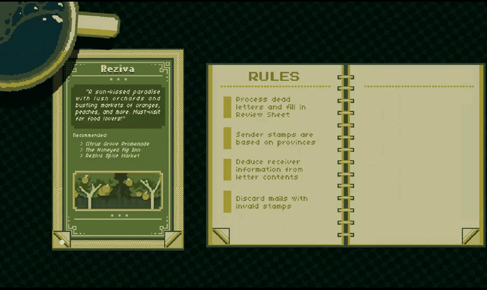
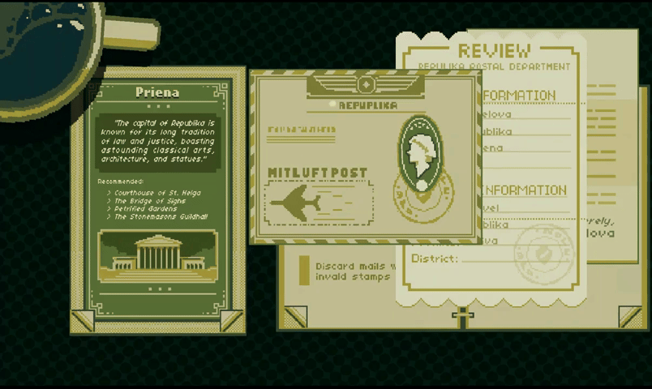
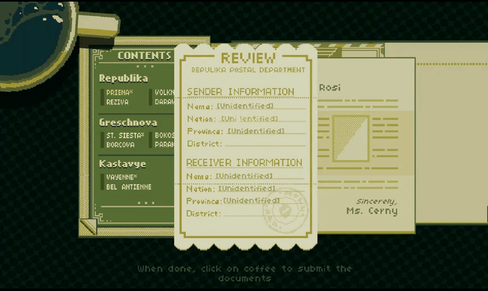
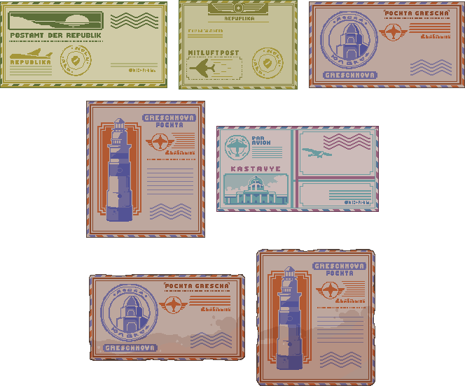
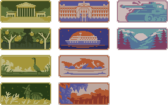
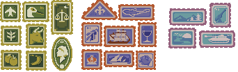
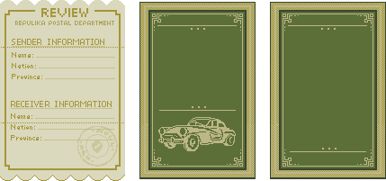
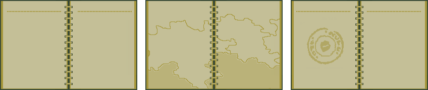

Dead Letter Office
June 2025About Game
Dead Letter Office is a document-inspection game inspired by Papers, Please. The player sorts undeliverable mail in a neutral nation caught between two countries at war, cross-referencing books to identify each sender and receiver and discarding mail with invalid stamps. Mistakes cost salary.
➤ Developed as a passion project, a tribute to the >Papers, Please genre.
➤ Role: Solo Developer & Artist
Solo Developer & Artist
I designed, programmed, and drew the entire game in Unity 2022.3 with C#.
- Built a procedural mail generator that assembles each envelope at runtime from nation, province, stamp, and letter prefabs.
- Structured all game content in a central dataset: three nations, ten provinces, stamp pools, letter text, and name lists.
- Wrote a validation system that checks the player's review sheet against the generated mail and issues a penalty ticket for each violation.
- Implemented drag-and-drop with live drop shadows and a z-ordered document stack.
- Built multi-page reference books (a rulebook and a tourist guide) with page flipping and hover states.
- Scripted the Day 1 tutorial with Unity Timeline cutscenes and a typewriter-style dialogue system with auto-sizing text boxes.
- Built the end-of-day economy screen (salary, penalties, rent, food, heat) and a pooled audio system with separate volume controls for SFX and ambience.
- Drew all 2D pixel art: envelopes, stamps, letters, reference books, the desk, and the UI.
Mechanics
Procedural Mail Generation
Every piece of mail is assembled at runtime from layered prefabs, so no two envelopes are the same. The generator builds each one in four steps:
- Nation and envelope. It picks a sender nation, then a random envelope prefab from that nation's pool. Each nation has its own envelope colors and shapes.
- Province and stamp. It picks a province within that nation, then a stamp prefab from that province's stamp pool.
- Stamp placement. The stamp is instantiated as a child of the envelope at a random position and a random tilt of up to ±10°, so each stamp looks hand-placed.
- Letter. When the player opens the mail, a letter prefab is instantiated with randomized text, sender name, and receiver name.
Each envelope has its own stamp bounds, stored as a flat float array in the Inspector and reshaped into a 2D array at startup. Stamps are looked up through a province-to-prefab dictionary.
The generated values are stored on the envelope in a MailProperties component, which serves as the answer key. Letter text is drawn per province and removed from the pool once used, so letters don't repeat.
Invalid mail comes from a reserved "Discard" province with its own stamps. Generation flags can force a mail to be valid or faulty, so the Day 1 tutorial is scripted through the same generator.

Review and Validation
The player fills in a review sheet whose nation and province fields are linked, so changing the nation limits the province options. On submit, the validator compares each field against MailProperties and prints a penalty ticket naming the first mismatch. The results feed an end-of-day salary screen.

Desk Interaction
Dragging a document lifts it to the top of a z-sorted stack and spawns a stripped-down shadow clone that follows behind it. The reference books use enum-based page states to swap sprites and content.

Architecture
Scripts are grouped by object type, with each object's art, animations, and code in one folder, and organized into namespaces such as mailGenerator and interactObjects. Cutscenes run on Unity Timeline and call public methods on the audio pool and score tracker. The audio pool stores each source with its maximum volume in tuples, so one slider can scale all sound effects at once.
// MailGenerator.cs// Builds one piece of mail at runtime by layering prefabs:// a random envelope, then a stamp from the sender's province on top.private void _createMailWithStamp(){ Vector3 stampPosition = _getRandomStampPosition(); _mailClone = Instantiate(_mailPrefab, _mailSpawnPos.position, Quaternion.identity); // . . . // Store the generated answers on the mail itself (used later for scoring) MailProperties _mailCloneProperties = _mailClone.GetComponent<MailProperties>(); _mailCloneProperties.Local_senderNationName = SenderNationName; _mailCloneProperties.Local_senderProvinceName = SenderProvinceName; // . . . (same for the receiver) _createStampClone(_mailClone, stampPosition); // . . .}// Stamp becomes a child of the envelope, with a random tilt so it looks hand-placedprivate void _createStampClone(GameObject mailClone, Vector3 position){ GameObject stampClone = Instantiate( _stampPrefab, transform.position, Quaternion.identity, mailClone.transform); stampClone.transform.localPosition = position; float rotateX = Random.Range(-_stampAngleMax, _stampAngleMax); stampClone.transform.localRotation = Quaternion.Euler(0f, 0f, rotateX);}// MainDataset.cs// Each envelope design has its own stamp area. The bounds are typed into// the Inspector as one flat list, then reshaped into one row per envelope.public static void addToMailParameters( float[,] parameterList, float[] parameter_continuousList, int mailListLength){ int i = 0; int j = 0; foreach (float parameter in parameter_continuousList) { if (i >= mailListLength) return; parameterList[i, j] = parameter; // [envelope, xLeft/xRight/yUp/yDown] j++; if (j >= 4) { j = 0; i++; } }}// Stamps are assigned per province by drag-and-drop, then stored in a// dictionary so the generator can look them up by province name.public void IntializeProvinceStampDictionary_Republika(){ // . . . foreach (provinceNamesStampsClass_Republika stamp in collectStampsFromProvincesClass) { StampProvinceDictionary[stamp.provinceName] = stamp.provinceStamp; }}Art
I drew all of the game's art as 2D pixel art. The stamps and envelopes were designed as separate layers so the generator could combine them freely.
- Five envelope designs, plus torn variants for story mail.
- Twenty stamps across three nations, including invalid stamps for the discard rule.
- Letter paper styles for each nation, including a torn letter.
- A rulebook with stamp reference pages and a world map, and a tourist guide with ten province illustrations.
- The desk, coffee cup, typewriter, review sheet, penalty ticket, bill, custom cursor, and game icon.




